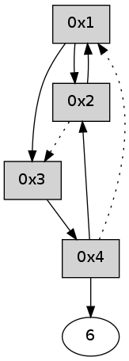

>> << IDX [start] -100 -25 -5 +0 +5 +25 +100 [310.177788019]
 Previous packets
----------------------------------------------------------------------
305.256709 beacon01(adaf) #0 coord=01,02,05,03,04,06 cycle=432.0ms assoc
-- color-indic=0 64 70 5e
305.266671 beacon02(adaf) #0 coord=01,02,05,03,04,06 cycle=432.0ms assoc 64 21 a1
305.276670 beacon05(adaf) #0 coord=01,02,05,03,04,06 cycle=432.0ms assoc 64 87 8b
305.286671 beacon03(adaf) #0 coord=01,02,05,03,04,06 cycle=432.0ms assoc 64 1b af
305.296670 beacon04(adaf) #0 coord=01,02,05,03,04,06 cycle=432.0ms assoc 64 bd 85
305.306672 beacon06(adaf) #0 coord=01,02,05,03,04,06 cycle=432.0ms assoc 64 c9 99
305.318315 [Hello(4): seq=101 sym=3,6 sysInfo= stat=3:12,0,0,0/6:6,0,0,0]
305.323308 [Hello(1): seq=0 asym=2 sysInfo= stat=2:0,0,0,0]
----------------------------------------------------------------------
305.748818 beacon01(adaf) #0 coord=01,02,05,03,04,06 cycle=432.0ms assoc
-- color-indic=0 64 b4 31
305.758780 beacon02(adaf) #0 coord=01,02,05,03,04,06 cycle=432.0ms assoc 64 e5 ce
305.768780 beacon05(adaf) #0 coord=01,02,05,03,04,06 cycle=432.0ms assoc 64 43 e4
305.778780 beacon03(adaf) #0 coord=01,02,05,03,04,06 cycle=432.0ms assoc 64 df c0
305.788779 beacon04(adaf) #0 coord=01,02,05,03,04,06 cycle=432.0ms assoc 64 79 ea
305.798781 beacon06(adaf) #0 coord=01,02,05,03,04,06 cycle=432.0ms assoc 64 0d f6
305.810491 [Hello(2): seq=600 sym=1 asym=3,4 sysInfo= stat=1:0,0,0,0/3:6,0,0,0/4:15,0,0,0]
----------------------------------------------------------------------
306.240926 beacon01(adaf) #0 coord=01,02,05,03,04,06 cycle=432.0ms assoc
-- color-indic=0 64 f8 81
306.250887 beacon02(adaf) #0 coord=01,02,05,03,04,06 cycle=432.0ms assoc 64 a9 7e
306.260887 beacon05(adaf) #0 coord=01,02,05,03,04,06 cycle=432.0ms assoc 64 0f 54
306.270887 beacon03(adaf) #0 coord=01,02,05,03,04,06 cycle=432.0ms assoc 64 93 70
306.280887 beacon04(adaf) #0 coord=01,02,05,03,04,06 cycle=432.0ms assoc 64 35 5a
306.290888 beacon06(adaf) #0 coord=01,02,05,03,04,06 cycle=432.0ms assoc 64 41 46
306.302600 [Hello(4): seq=102 sym=6,2 asym=1 sysInfo= stat=6:6,0,0,0/2:0,0,0,0/1:0,0,0,0]
----------------------------------------------------------------------
306.733034 beacon01(adaf) #0 coord=01,02,05,03,04,06 cycle=432.0ms assoc
-- color-indic=0 64 3c ee
306.742994 beacon02(adaf) #0 coord=01,02,05,03,04,06 cycle=432.0ms assoc 64 6d 11
306.752994 beacon05(adaf) #0 coord=01,02,05,03,04,06 cycle=432.0ms assoc 64 cb 3b
306.762995 beacon03(adaf) #0 coord=01,02,05,03,04,06 cycle=432.0ms assoc 64 57 1f
306.772994 beacon04(adaf) #0 coord=01,02,05,03,04,06 cycle=432.0ms assoc 64 f1 35
306.782996 beacon06(adaf) #0 coord=01,02,05,03,04,06 cycle=432.0ms assoc 64 85 29
306.794666 [Hello(2): seq=601 sym=1 asym=3 sysInfo= stat=1:1,0,0,0/3:6,0,0,0]
----------------------------------------------------------------------
307.225141 beacon01(adaf) #0 coord=01,02,05,03,04,06 cycle=432.0ms assoc
-- color-indic=0 64 71 e9
307.235102 beacon02(adaf) #0 coord=01,02,05,03,04,06 cycle=432.0ms assoc 64 20 16
307.245102 beacon05(adaf) #0 coord=01,02,05,03,04,06 cycle=432.0ms assoc 64 86 3c
307.255102 beacon03(adaf) #0 coord=01,02,05,03,04,06 cycle=432.0ms assoc 64 1a 18
307.265103 beacon04(adaf) #0 coord=01,02,05,03,04,06 cycle=432.0ms assoc 64 bc 32
307.275104 beacon06(adaf) #0 coord=01,02,05,03,04,06 cycle=432.0ms assoc 64 c8 2e
307.286501 [Hello(1): seq=2 sym=2 sysInfo= stat=2:2,0,0,0]
307.290466 [Hello(4): seq=103 sym=6,2 asym=1 sysInfo= stat=6:7,0,0,0/2:0,0,0,0/1:0,0,0,0]
----------------------------------------------------------------------
307.717249 beacon01(adaf) #0 coord=01,02,05,03,04,06 cycle=432.0ms assoc
-- color-indic=0 64 b5 86
307.727211 beacon02(adaf) #0 coord=01,02,05,03,04,06 cycle=432.0ms assoc 64 e4 79
307.737211 beacon05(adaf) #0 coord=01,02,05,03,04,06 cycle=432.0ms assoc 64 42 53
307.747210 beacon03(adaf) #0 coord=01,02,05,03,04,06 cycle=432.0ms assoc 64 de 77
307.757212 beacon04(adaf) #0 coord=01,02,05,03,04,06 cycle=432.0ms assoc 64 78 5d
307.767211 beacon06(adaf) #0 coord=01,02,05,03,04,06 cycle=432.0ms assoc 64 0c 41
307.778898 [Hello(2): seq=602 sym=1 asym=3 sysInfo= stat=1:2,0,0,0/3:7,0,0,0]
----------------------------------------------------------------------
308.209357 beacon01(adaf) #0 coord=01,02,05,03,04,06 cycle=432.0ms assoc
-- color-indic=0 64 f9 36
308.219317 beacon02(adaf) #0 coord=01,02,05,03,04,06 cycle=432.0ms assoc 64 a8 c9
308.229320 beacon05(adaf) #0 coord=01,02,05,03,04,06 cycle=432.0ms assoc 64 0e e3
308.239319 beacon03(adaf) #0 coord=01,02,05,03,04,06 cycle=432.0ms assoc 64 92 c7
308.249318 beacon04(adaf) #0 coord=01,02,05,03,04,06 cycle=432.0ms assoc 64 34 ed
308.259318 beacon06(adaf) #0 coord=01,02,05,03,04,06 cycle=432.0ms assoc 64 40 f1
308.271008 [Hello(4): seq=104 sym=6,2 asym=1 sysInfo= stat=6:7,0,0,0/2:1,0,0,0/1:0,0,0,0]
308.275805 [Hello(1): seq=3 sym=2,3 sysInfo= stat=2:3,0,0,0/3:0,0,0,0]
----------------------------------------------------------------------
308.701465 beacon01(adaf) #0 coord=01,02,05,03,04,06 cycle=432.0ms assoc
-- color-indic=0 64 3d 59
308.711426 beacon02(adaf) #0 coord=01,02,05,03,04,06 cycle=432.0ms assoc 64 6c a6
308.721426 beacon05(adaf) #0 coord=01,02,05,03,04,06 cycle=432.0ms assoc 64 ca 8c
308.731425 beacon03(adaf) #0 coord=01,02,05,03,04,06 cycle=432.0ms assoc 64 56 a8
308.741426 beacon04(adaf) #0 coord=01,02,05,03,04,06 cycle=432.0ms assoc 64 f0 82
308.751428 beacon06(adaf) #0 coord=01,02,05,03,04,06 cycle=432.0ms assoc 64 84 9e
308.763107 [Hello(2): seq=603 sym=1 asym=3 sysInfo= stat=1:3,0,0,0/3:8,0,0,0]
----------------------------------------------------------------------
309.193572 beacon01(adaf) #0 coord=01,02,05,03,04,06 cycle=432.0ms assoc
-- color-indic=0 64 45 f4
309.203535 beacon02(adaf) #0 coord=01,02,05,03,04,06 cycle=432.0ms assoc 64 14 0b
309.213532 beacon05(adaf) #0 coord=01,02,05,03,04,06 cycle=432.0ms assoc 64 b2 21
309.223533 beacon03(adaf) #0 coord=01,02,05,03,04,06 cycle=432.0ms assoc 64 2e 05
309.233533 beacon04(adaf) #0 coord=01,02,05,03,04,06 cycle=432.0ms assoc 64 88 2f
309.243535 beacon06(adaf) #0 coord=01,02,05,03,04,06 cycle=432.0ms assoc 64 fc 33
309.255217 [Hello(4): seq=105 sym=6,2 asym=1 sysInfo= stat=6:8,0,0,0/2:1,0,0,0/1:1,0,0,0]
309.258286 [Hello(1): seq=4 sym=2,3 sysInfo= stat=2:4,0,0,0/3:0,0,0,0]
----------------------------------------------------------------------
309.685680 beacon01(adaf) #0 coord=01,02,05,03,04,06 cycle=432.0ms assoc
-- color-indic=0 64 81 9b
309.695640 beacon02(adaf) #0 coord=01,02,05,03,04,06 cycle=432.0ms assoc 64 d0 64
309.705641 beacon05(adaf) #0 coord=01,02,05,03,04,06 cycle=432.0ms assoc 64 76 4e
309.715642 beacon03(adaf) #0 coord=01,02,05,03,04,06 cycle=432.0ms assoc 64 ea 6a
309.725642 beacon04(adaf) #0 coord=01,02,05,03,04,06 cycle=432.0ms assoc 64 4c 40
309.735643 beacon06(adaf) #0 coord=01,02,05,03,04,06 cycle=432.0ms assoc 64 38 5c
309.747332 [Hello(2): seq=604 sym=1 asym=3 sysInfo= stat=1:4,0,0,0/3:9,0,0,0]